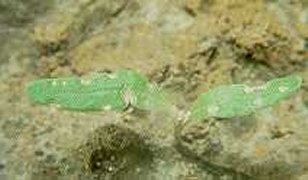

Keresztesvirágúak földibolhái
Phyllotreta-fajok
A több fajból álló kártevő csoport a termesztett és vad keresztesvirágú növényeket - káposztafélék és retek - kedveli. A fiatal növényi részeket teljesen átrágják, a vastagabb részeket hámozzák. A kelő szikleveles növények teljesen eltűnnek kártételük nyomán, de az idősebb levelek szitává lyuggatása, levélnyelek berágása is jelentős károkat eredményez, különösen nagy melegben. Ekkor ugyanis a bolhák táplálkozása intenzív és a sebeken át a növény sok vizet párologtat. A bogarak telelnek át, s már kora tavasszal megjelennek. Hűvös időben alig észlelni őket, viszont napsütéses melegben igen aktívak. Fémfényű, ugrólábú állatok, egyes fajok lárvája a gyökereket károsítja, mások a növények levelében aknáznak.
Védekezés:
- Megelőző védekezést jelent a keresztesvirágú gyomok írtása, a
növények gyors fejlődésének biztosítása.
Javasolt növényvédő szerek:
 Ditrifon 5 porozó
Ditrifon 5 porozó
 Ditrifon 50 WP
Ditrifon 50 WP
 Flibol E
Flibol E
 Dimercon 50
Dimercon 50
 Wofatox porozó
Wofatox porozó